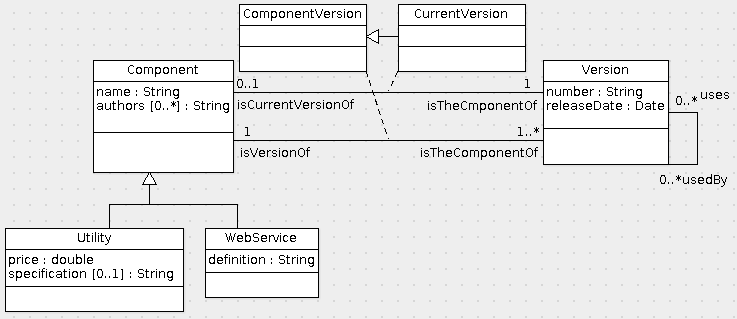

Design a database for managing software components. A component has a unique name and may have authors. Each component has versions, exactly one of which is current. Each version has a version number and a release date. A component version may use other component versions. Some components are web services. A web service has a definition. Some components are utilities. A utility has a price and may have a specification.
Show your design as a UML or ER diagram. Show all cardinality constraints on both associations and attributes.

Here are some alternative solutions:
The grade is based on the design elements that were correctly included:
Translating this data model to SQL gives this schema:
create table Component( name varchar(255) primary key ); create table ComponentAuthors( component varchar(255), foreign key(component) references Component(name) on update cascade on delete cascade, author varchar(255), primary key(component, author) ); create table ComponentVersion( id int primary key, number varchar(255) not null, releaseDate date not null ); create table Utility( name varchar(255) primary key, foreign key(name) references Component(name) on update cascade on delete cascade, price double not null, specification varchar(50000) null ); create table WebService( name varchar(255) primary key, foreign key(name) references Component(name) on update cascade on delete cascade, definition varchar(50000) not null ); create table uses( user int, foreign key(user) references ComponentVersion(id) on update cascade on delete cascade, usee int, foreign key(usee) references ComponentVersion(id) on update cascade on delete cascade, primary key(user, usee) ); create table has( component varchar(255), foreign key(component) references Component(name) on update cascade on delete cascade, version int primary key, foreign key(version) references ComponentVersion(id) on update cascade on delete cascade ); create table current( component varchar(255) unique, foreign key(component) references Component(name) on update cascade on delete cascade, version int primary key, foreign key(version) references ComponentVersion(id) on update cascade on delete cascade, foreign key(component, version) references has(component, version) );
© 2010 Ken Baclawski. All rights reserved. Redistribution and use in source and binary forms, with or without modification, are permitted provided that redistributions and uses retain this copyright notice.
{kind=link}
{kind=link}